城隍商圈 樹河雍居
客雅溪.中山路交匯

DANCING
HOUSE
建築會跳舞
靈感參考歐洲河畔的
藝術雕塑
靈感源自捷克伏爾塔瓦河畔的「跳舞的房子」，
建築如裙擺般層層疊起，隨風與綠意於城市間翩然起舞；
基座設計猶如鑽石切割，對應八心八箭的完美比例，
萬物鑲嵌於此，共奏一曲與自然相擁的建築舞曲。
/ 水岸建築

閎基建築 環環相扣
建築最親密的互信關係
閎基開發｜禾逸開發｜集業營造｜勝駿建設
風勁建設｜禹晨開發｜錦田開發
成立至今 20 年 總推案量 45 案、 案總銷戶數 2671 戶
足跡遍佈南北7大縣市，屢獲全球規模設計獎項肯定。


ARCHITECTURAL
PLANNING
建築規劃
木木建築設計事務所
林秉翰建築師

建築不只是結構，而是人與空間的對話
攜手建築師父親，深耕新竹家園
以人為本，讓生活與建築共鳴
- 閎基建築 豹南門
- 閎基建築 Le coin
- 家益建設 阡陌晴

用視野為童年織夢
也為城市織光
ARCHITECTURAL
DESIGN
建築外觀
林淵源建築師事務所
林淵源建築師
入圍2011年TRAA第三屆台灣住宅建築獎、
2016年TRAA第五屆台灣住宅建築獎，
「兩岸五十位傑出建築人的追夢故事」專訪報導，
浙江省海寧市「地表上的詩意」徐志摩故里永不落幕的建築展，
亞洲十位參展建築師之一。
- 「水邊森」入圍2011年TRAA第三屆台灣住宅建築獎
- 「T house」入圍2016年TRAA第五屆台灣住宅建築獎
- 「昕奕居」、「楓韻點石」入圍2018年TRAA第六屆台灣住宅建築獎
INTERIOR AND
LANDSCAPE DESIGN
景觀公設
玖柞設計
蔡雅怡總監
從專業視角刻畫美學語彙，從既有環境的激盪，
詮釋現代住宅氛圍，為每一寸空間打造獨有的表情。
榮獲台灣、亞洲、世界多項設計大獎，
國泰、富宇、總太⋯⋯多家品牌建商指名合作。
- 國泰建設 國泰層峰 ｜ 富宇建設 富宇悅峰 ｜ 昂峰建設 謙若樹
- 春福建設 春福水硯 ｜ 聚富建設 聚富圓圓 ｜ 總太地產 總太2020
- 2018 亞洲設計獎
- 2020 台灣空間美學新秀設計師金邸獎
- 2021 繆思設計獎
- 2024 承豪奢石首屆奢石獎
Information 基本資料
- 建案名稱 | 閎基鑲湧
- 建案類型 | 預售屋
- 規劃坪數 | 25-37坪
- 投資興建 | 閎基建築機構－禾逸開發股份有限公司
- 建築代銷 | 海悅機構-海宇國際股份有限公司
- 建案位置 | 新竹市香山區中山路、牛埔路交叉口
- 接待中心 | 新竹市東區中華路二段190號（國賓大飯店）
- 貴賓專線 | 03-5315588